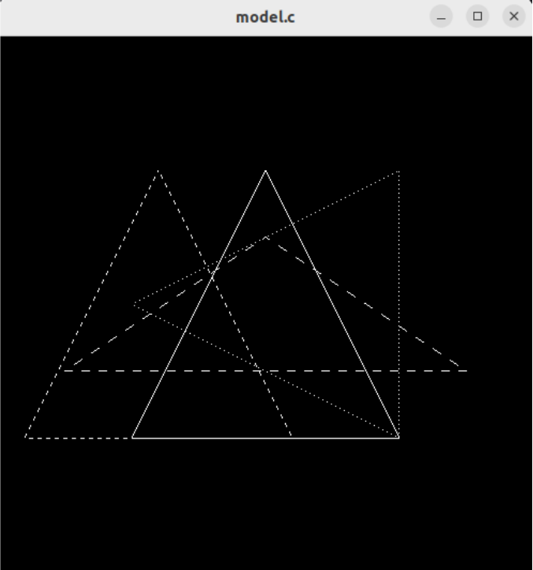

Em computação gráfica existem três principais transformações: escalonamento, rotação e translação. Assim como transformações lineares, são funções que recebem pontos num espaço vetorial e geram outros pontos (em outro espaço ou no mesmo, i.e., de R² para R², por exemplo).
Na figura gráfica abaixo, o triângulo renderizado com linha contínua é o “original”, sendo os demais resultados de transformações. A primeira transformação é a de translação (triângulo tracejado mais à esquerda), sendo: T(dx,dy) = (-20,0), por isso vemos um “deslocamento” à esquerda em relação ao original. A segunda transformação é a de escalonamento (triângulo tracejado achatado no centro da imagem), sendo: S(sx,sy) = (1.5, 0.5), o resultado é um triângulo de altura equivalente à metade do original e largura equivalente á ⅔ do mesmo. Por fim, a última transformação é a de rotação (triângulo tracejado tombado), com R() = (90.0), onde o resultado é o mesmo triângulo rotacionado 90º à esquerda. Carrega-se a matriz identidade como
O próximo sistema gráfico possui interação com usuário, permitindo iniciar, pausar e retomar a animação de rotação do quadrado branco. Ao clicar com botão direito do mouse, o programa inicia rotação do quadrado com R() = (2.0) a cada tique de quadro. O efeito de animação ocorre pois a chamada glutMainLoop() fica repetindo a execução gráfica e, se o estado for de animação, a rotação do quadrado que será renderizado no instante do tique, terá seu valor acrescido de 2º. Neste caso, o programa deve guardar a matriz da pilha para que, quando a animação for retomada, o quadrado continue sua rotação a partir da angulação que havia parado anteriormente.
No próximo exemplo a animação é contínua desde sua execução, portanto não há necessidade de armazenar a matriz da pilha. O uso das teclas F1, F2 e F3 permitem trocar a cor do triângulo para azul, verde e vermelho, respectivamente. A cada tique, o triângulo é rotacionado em R() = (1.0), através da variável angulo, usando o operador “++” da linguagem.
O próximo exemplo simula um movimento de dois corpos, representando um planeta orbitando outro corpo. O sistema é interativo, podendo rotacionar o corpo menor em torno de seu próprio eixo (rotação de dia), onde foi utilizado a rotação R() = ((day + 10) % 360), sendo day a variável que armazena o valor de rotação. Além disso, neste exemplo, é utilizado a renderização em perspectiva, que permite transladar a esfera em profundidade. As transformações utilizadas para transformação do planeta são translação e rotação.
O exemplo seguinte permite rotacionar paralelepípedos que representam “membros” de um braço robótico. As transformações são de rotação, porém ocorrem em mais de um objeto simultaneamente. A dimensão dos objetos é determinada pela função glScalef(x,y,z), no caso, ambos os objetos têm como dimensão inicial (2.0,4.0,1.0).
Abaixo exemplo de aplicação de transformações (escala, rotação e translação) para simulação do movimento de uma bola de futebol americano ao ser chutada em direção ao gol:

Abaixo exemplo de aplicação de transformações (escala, rotação e translação) para renderização de um objeto similar à uma seta tridimensional:

Abaixo exemplo de aplicação de transformações (escala, rotação e translação) para renderização de uma cabeça de um rato simples:
rato.cpp